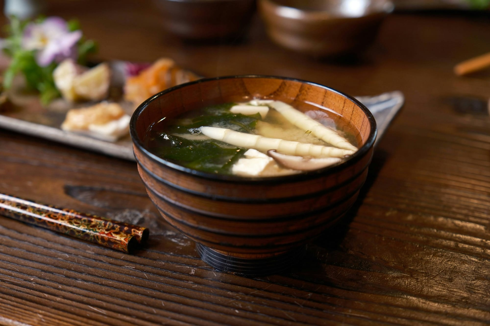
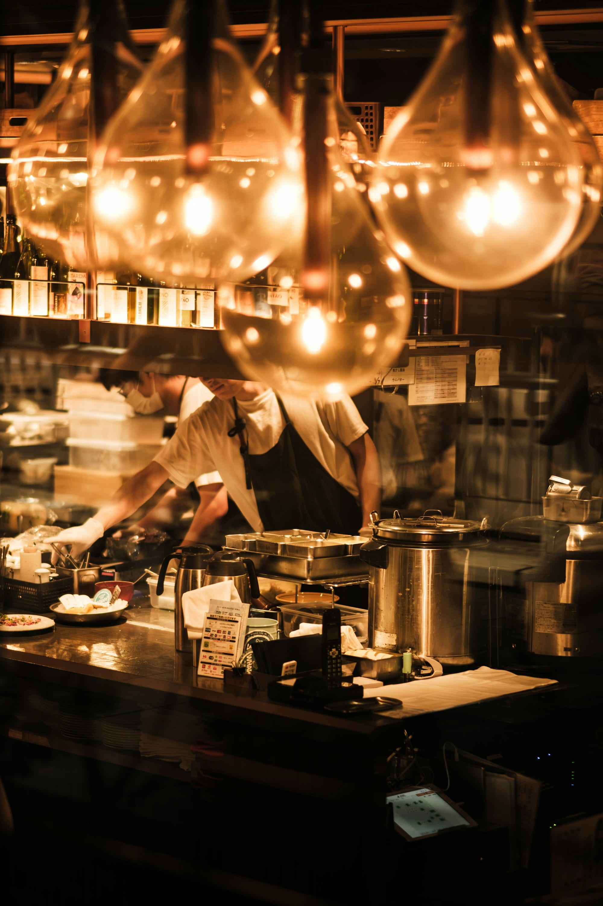

季節を、一皿ずつ。
空席を確認して予約する
お電話03-0000-0000

献立は、
その朝に決めます。
毎朝、豊洲で魚を見てから、その日の八品を組み立てます。同じ献立の日は、一年に一度もありません。
器は半分が京都の作家もの、半分は先代から受け継いだもの。料理より先に、器が季節を知らせることもあります。
店主 灯 源一郎（架空）

仕上げは、目の前で。
八席すべてから、板場の手元が見えるように設えました。
- 開始時間
- 十八時／二十時半の二部制（一斉にお始めします）
- お席
- カウンター八席のみ。四名様まで並びでご用意できます
- お子様
- 中学生以上、大人と同じコースでお願いしております
- お取り消し
- 前日 50％／当日 100％を頂戴します
- お願い
- 香りの強い香水はお控えください
アクセス
東京都港区西麻布〇丁目〇-〇（架空の住所）
六本木駅から徒歩十分、西麻布交差点から路地を一本入った二階です。
定休日 日曜・月曜
要用意：地図（Googleマップの埋め込み）